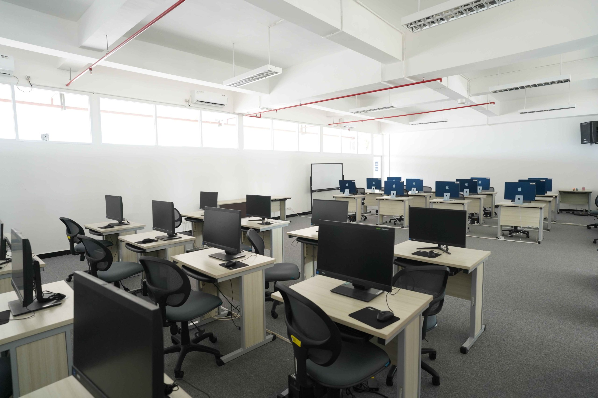

Ruang Musik
Tempat untuk berlatih, merekam, dan menampilkan musik, serta sebagai sarana pendidikan dan pengembangan bakat siswa.
SARANA & PRASARANA |
Lokasi |
Lab. Komputer ruang komputer yang memadai dan lengkap menunjang kebutuhan belajar. |
 |
|
Ruang Musik Tempat untuk berlatih, merekam, dan menampilkan musik, serta sebagai sarana pendidikan dan pengembangan bakat siswa. |
Perpustakaan Sumber informasi, tempat pendidikan, pusat penelitian, dan ruang rekreasi. |
|
Kantin Ruangan atau tempat yang disediakan untuk makan dan minum |